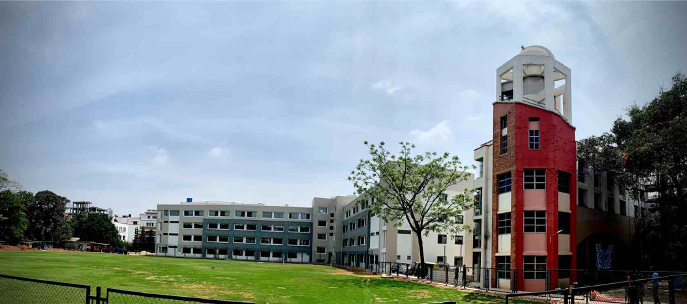

About Us

St Joseph's University (SJU) is a Jesuit university at the heart of Bengaluru, the Silicon City of India. Established in 1882 by Paris Foreign Fathers, the college management was handed over to the Jesuit order (Society of Jesus) in 1937. The college was first affiliated with the University of Madras and later with the Mysore and Bangalore universities. In 1986, St Joseph's College became the first affiliated college in Karnataka to offer postgraduate courses. In 1988, it became the first college in Karnataka to get a research center, and in 2005, it was one of the five colleges in Karnataka that was awarded academic autonomy. In February 2021, the St Joseph's University bill was presented in the Karnataka Legislative Assembly and was subsequently passed by the Legislative Assembly and Karnataka Legislative Council. The college received its University status on 2nd July 2022 and was inaugurated as India's first public-private university by the Hon'ble President of India, Smt. Droupadi Murmu on 27th September 2022.
About the School of Information Technology

The School of Information Technology (SIT) offers programs related to computer science, data analytics, computer applications, and domain-specific applications. The SIT focuses on holistic learning that helps students make major contributions to the IT industry and serve society at large. The SIT has more than 2000 students and 40 committed faculty members, besides many visiting professors and working professionals from industry and research and development organizations. Faculty members are highly motivated to do pioneering research and excel in teaching and learning processes. They provide students with the opportunity to apply acquired knowledge to solve real-world problems and gain research experience. The placement record of SIT is always exceptional.
Objective of the Conference
The conference proposes publishing research papers on advanced engineering, science and technology techniques, experimental analysis and theoretical reviews. This conference will serve as a platform for academicians, industrialists, and students to learn more about the latest technologies in data science. All the papers presented at the conference will be considered for conference proceedings.
Call for Papers
The National Conference on Current Trends in Information Technology (NCCTIT-2025) will feature invited talks by distinguished scientists, eminent professors, and engineers. Prominent speakers will deliberate on current trends in Information Technology.
Research Paper Topics
Topics of interest for submission include, but are not limited to:
Wireless Networks
Bioinformatics
Image Processing
Signal Processing
Internet of Things
Machine Learning
Deep Learning
Health Care Data Analytics
Business Intelligence
Artificial Intelligence
IoT and Big Data Applications
Network Security and Cryptography
Submission Guidelines
The papers must be original and should not have been published previously or be under consideration for publication elsewhere while being evaluated for this conference. The full manuscript must be submitted as a Microsoft Word document in IEEE format. Papers submitted for the conference will undergo a rigorous peer-review process. All accepted papers will be published in the NCCTIT-2025 conference proceedings with ISBN.
Publication
All accepted papers will be considered for NCCTIT-2025 conference proceedings. The best papers selected in this conference will be considered for UGC CARE / Scopus Indexed Journals and Book Chapters.
Important Dates
| Event | Date |
|---|---|
| Conference Dates | 10 & 11 March, 2025 |
| Paper Submission Deadline | 20 February, 2025 |
| Notification of Acceptance | 25 February, 2025 |
| Camera Ready Paper Submission | 28 February, 2025 |
Organizing Committee
Chief Patron
- Rev Dr Victor Lobo SJ Vice-Chancellor, SJU
Patrons
- Dr Ronald J. Mascarenhas - Pro-Vice-Chancellor, SJU
- Dr Regina Mathias - Pro-Vice-Chancellor, SJU
- Dr Melwin Colaco - Registrar, SJU
- Rev Fr Arun Prashanth D'Souza SJ - Finance Officer, SJU
School of Information Technology
- Rev Fr Denzil Lobo SJ - Dean - SIT
- Dr Jayati Bhadra - HOD Advanced Computing
- Dr B G Prasanthi - Associate Dean - SIT & HOD Computer Science
Organising Committee
All the Faculty Members of School of Information Technology
National Advisory Committee
- Dr Hanumanthappa M - Bangalore University, Bengaluru, Karnataka
Conference Convenor
- Dr Annie Syrien - Assistant Professor - +91 9980004442
Conference Co-Convenors
- Dr Periyasamy P - Assistant Professor - +91 9443752501
- Mr Prem Sagar - Assistant Professor - +91 7795799358
Registration Fees
- For UG Student ₹500
- For PG Student ₹700
- For Faculty / Ph.D. Scholar ₹1,000
- For Industry Delegate ₹1,500
- For Participant ₹400
- For International Participant $50